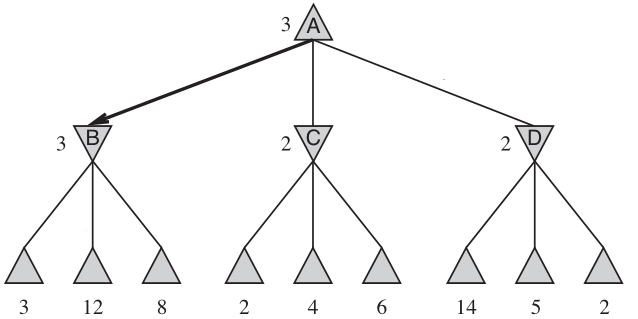
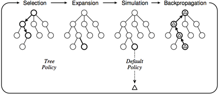

对抗搜索简介¶
前置知识¶
- 具有最基本的程序设计思想，对于深度优先搜素、广度优先搜索等最基本的搜索算法有着一定的了解。
- 在这篇文章中 Snake Go 会作为例子出现，其具体规则请参照 Saiblo 游戏链接。
概述¶
对抗搜索（英语：Adversarial search）是一个在博弈中选取决策的方法，它与博弈论密切相关。但是在本篇文章中，我们仅讨论一种特殊情况下的游戏，它具有以下特征：
- 游戏有且仅有两个玩家参与，分轮进行，双方轮流做出决策。
- (Fair) 双方均知道游戏的一切完整信息。
- (Markov) 任意一个游戏者在某一轮可以做出的决策只与当前轮的游戏状态有关，与之前或者之后的决策无关。
- (Finite) 游戏一定会在有限轮内结束。
- (Zero-Sum) 游戏结束时一定有一方胜利，另一方失败，不存在平局。
- 我们称某方胜利了，当且仅当在某一轮中轮到对方行动，但对方没有合法的决策。
值得特别指出的是，有些游戏可能不满足以上要求，但可以通过将其进行等价转化来得到。
比如游戏 Snake Go，它并不满足最后一条。但若将状态定义为 (\mathrm{turn}, \mathrm{player}, \mathrm{context})，这三元组分别表示轮数，当前玩家以及游戏的上下文。并且为玩家添加一个决策 \mathrm{pass}，当且仅当该玩家没有蛇时可用。为玩家添加一个决策 \mathrm{win}，当且仅当达到回合上限时分数较多（相等时后手）者可用。则改变后的游戏满足以上规则，并且与我们讨论的 Snake Go 等价。
对抗搜索是一种搜索算法，它解决的是这样的问题：给定一个游戏在某一轮的状态，在一定的时间和空间限制下，为当前行动的玩家提供一个决策，使得玩家之后更有可能胜利。
SG 搜索¶
我们首先讨论最简单的情况，如果我们有充足的时间和空间，由于游戏本身是有限的，并且游戏是公平的，那么对于一个给定的状态，其胜者是确定的。也就是说，如果我们遍历了这个状态可能拓展出的所有状态，就可能推断出这个状态的胜者。
为了简化描述，我们给出一些形式化的符号定义：
s 表示游戏的一个状态，它通常是 (\mathrm{turn}, \mathrm{player}, \mathrm{context}) 的三元组，即游戏的轮数、该轮应当行动的玩家以及游戏的其他信息。
我们用 \mathrm{player} = 0, 1 来分别表示两名玩家。为了简化描述，我们称 \mathrm{player} 为状态 s 的先手，对应地 \mathrm{player} \oplus 1 为状态 s 的后手。这里 \oplus 表示异或。
\mathrm{action}(s) = \{a_1, a_2, \cdots, a_m\} 是一个集合，给出了 s 状态下所有可能的决策。如果 \mathrm{action}(s) = \varnothing 则说明 s 是终态，用 s \in V_T 表示，此时游戏已经结束并且 \mathrm{player} 失败了。
\delta(s, a)=s' 是转移函数，它表示在状态 s 采取决策 a 后转移到的状态为 s'。
特别地，我们定义 S_0 为最初给定的状态，即初态。
如果一个状态 s = (\mathrm{turn}, \mathrm{player}, \mathrm{context}) 是胜者是 \rm{player}，那么称其是先手必胜的，否则称它是先手必败的。
我们可以通过以下算法来确定任何一个状态的胜负性：
-
如果 s \in V_T，则 s 是先手必败的，否则考虑 s 能够转移到的所有集合： $$ \mathrm{ch}[s] = \{s' \mid \delta(s, a) = s', \forall a \in \mathrm{action}(s)\} $$
-
如果 \forall t, t\in \mathrm{ch}[s]，t 是先手必胜的，那么 s 是先手必败的。
-
如果 \exists t, t\in \mathrm{ch}[s]，t 是先手必败的，那么 s 是先手必胜的。
该算法从直观上不难理解：考虑到经过一轮后先后手发生改变，所以当前的玩家只要有一个决策能够转移到先手必败的状态，那么它就可以选择这个决策让对方必败，从而达到自己必胜。反之亦然。
例子：Nim 游戏¶
有 n 堆石子，每堆有 a_i > 0 个石子。双方轮流取一堆石子中任意数量的石子，但不能不取。不能行动者失败。
简单起见，假设 n = 3 并假设石子数量为 (1, 2, 1)，这里 \rm{turn} 和 \rm{player} 并不重要，我们将其从状态表示中省略。
使用之前的方法确定状态的胜负性：
- 基础：(0,0,0) 是先手必败状态。
- (1,0,0),(0,1,0),(0,0,1),(0,2,0) 是先手必胜状态，因为可以转移到 (0,0,0)。
- (1,1,0),(0,1,1),(1,0,1) 是先手必败状态，因为只能转移到上一行的状态中。
- (1,1,1),(1,2,0),(0,2,1) 是先手必胜状态，因为可以转移到上一行的状态中。
- (1,2,1) 是先手必胜状态，因为可以转移到 (1,0,1)。
这样，如果我们设状态 (a_1, a_2, \cdots, a_n) = 1 表示先手必胜，= 0 表示先手必败。则可以用以下伪代码进行搜索。
1 2 3 4 5 6 7 8 9 10 | |
这样，使用记忆化搜索，可以在 O\left(\prod a_i\right) 的时间复杂度内得到答案。
注：利用博弈论的知识，Nim 游戏可以在 O(n) 的时间内通过计算异或和得到答案。但这超出了本篇文章的范围。有兴趣的读者可以参考 OI Wiki 中关于博弈论的资料。
Min-Max 搜索¶
SG 搜索固然确定地得到正确答案，但是时间复杂度与状态数相关。对于更复杂的问题，由于各种限制我们往往不能遍历所有可能状态，因此我们或许可以通过牺牲正确性来换取可行性。
一个简单的想法是引入估价函数（英语：utility function, power function, heuristic function）f: S\to \mathbb{R} 给出对于某个状态的评估。我们人为的规定对于局面 s' = \delta(s, a)，f(s') 给出相对于状态 s 先手的估值（注意不是 s'），这个值越大则认为局面越“优”。特别的，如果局面 s' 是先手必败的（这意味着对于 s 而言是先手必胜的），则其估值可以设为 +\infty。
在我们这种定义下，先手会找到估价函数值最大的状态，然后选择能够转移到这个状态的决策。当然，这种方法的有效性极大的依赖于估价函数是否合理。
我们将这种想法一般化，如果搜索多层，那么我们可以对状态所构成的搜索树实施类似 SG 搜索的做法，只不过层与层之间不再是必胜与必败关系的转移，而是估值的转移：
- 设根节点 S_0 的深度为 0，每进行一次搜索深度加一。
- 对于叶节点 l，其估值 w_l = f(l)。
- 对于深度为 d 的非叶节点 n：
- 如果 d 是偶数，则 w_n = \max_{s\in \mathrm{ch}[n]}(w_s)，即其所有孩子估值的最大值。
- 如果 d 是奇数，则 w_n = \min_{s\in \mathrm{ch}[n]}(w_s)，即其所有孩子估值的最小值。
直观上理解是类似的：经过一轮后先后手发生改变，而我们的估值函数是根据于根节点 S_0 的先手状态确定。另一方面，因为游戏是零和的，所以一个状态对应先手在估值函数 f 下估值的最大值，那么对于后手最优的也应当是 f 下的最小值。

如图，此时先手选择了 A\to B 作为决策。图源：Stuart Russell, Peter Norvig: Artificial Intelligence A Modern Approach。
请思考：为什么这样做比直接计算 f(S_0) 能更准确衡量局面的价值。
Alpha-Beta 剪枝¶
在 Min-Max 搜索过程中可以进行剪枝，但这不是本文的重点。有兴趣的读者可以参考 OI Wiki 上的资料。
随机化估值函数¶
根据前文的讨论，不难发现在这种情况下的 AI 的好坏严重依赖于估值函数 f 的构造。对于较为复杂的游戏（如 Snake Go），人工构造一个估值函数可能是较为困难的。基于这些考虑，我们尝试随机化方法。
一个较为直接的估值函数是这样的，对于搜索树的所有叶节点采用默认决策模拟 N 次，将其中相对于 S_0 的胜率作为估值函数。这里“以默认决策模拟”指的是以该就叶节点为新的初态，不断地随机选择任意一个可能的决策进行迭代，直到达到某个终态，并判断其相对于叶节点的胜负性。
注意到整个算法本身与前文的 Min-Max 搜索是完全一致的，我们只是将估值函数 f 换成了随机模拟的胜率。显然，这种做法的正确性依赖于概率论中的极限定理，也就是说，模拟的次数 N 越大，我们得到的结果越有说服力。
Monte-Carlo 树搜索¶
上文的随机化思想在实际应用中可能并不理想，这主要是因为它静态的将所有的叶节点搜索出来，并且把它们视为等同的进行模拟。更重要的是，我们希望能够在模拟过程中尽可能的利用先前模拟的信息以加快收敛的速度。
基于以上考量，我们给出 Monte-Carol 树搜索算法。该算法以一个初始状态 S_0 作为输入，不断的进行拓展最初只有一个根节点 S_0 的搜索树，搜索树节点维护状态为 (s, w, n) 分别表示对应的状态、权值、被访问次数。
其主要过程可以分四步：
- 选择
- 从 S_0 出发，选择一个可拓展的节点 s 并随机的拓展其一个子节点。一个节点是可拓展的，当且仅当其对应的状态 s 不是终态并且存在 t\in \mathrm{ch}[s]，且 t 不在搜索树中。
- 拓展
- 假设选择拓展 t\in \mathrm{ch}[s], 那么在搜索树中添加一个状态为 t 的节点，并设其为 s 的子节点。
- 模拟
- 以 t 为初态实施默认策略，计算默认策略的权值增量 \Delta。
- 如果默认策略中相对于 S_0 胜利，则 \Delta = 1，否则 \Delta = 0。
- 回溯
- 设 S_0 到 t 的路径上所有节点为 s_1, s_2, \cdots, t 依次更新其状态：
- 如果节点 N 的深度与 L 同奇偶，更新为 (s, w, n)\to (s, w + \Delta, n + 1)。
- 如果节点 N 的深度与 L 不同奇偶，更新为 (s, w, n)\to (s, w + 1 - \Delta, n + 1)。
- 如果时间足够，回到“选择”部分重复。
- 设 S_0 到 t 的路径上所有节点为 s_1, s_2, \cdots, t 依次更新其状态：
最后，每个节点的估值即为胜率 p = \dfrac{w}{n}，根节点选择估值最大的节点对应的决策。

上图较为形象的表示了 Monte-Carlo 树搜索的四步流程。
置信上界树¶
先前算法存在两个不足之处：
- 在 Min-Max 搜索中，我们最终只会选择每层节点中最大或最小的节点进行决策，因此对于其“平庸”的兄弟并不关心，而朴素的算法是进行等概率的随机选择。
- 我们需要考虑模拟次数对于估值的影响，一个模拟 1 次胜率为 0% 的节点，不一定比模拟 100 次胜率为 10% 的节点差。
我们采取所谓的置信上界算法（英语：Upper Confidence Bounds）来解决这个问题。
UCB 的想法是改善选择拓展节点的方案，这个方案应该具有两方面的单调性：相同模拟次数下，胜率高的节点应该更多的被访问；相同胜率下，模拟次数少的估值应当更多的被访问。
考虑到这些条件，经过一些数学推导，设根节点为 (S_0, w_0, N) 我们定义节点 (s, w, n) 的置信上界 I(s)：
其中 C 是可以调节的常数。
改进后的算法被称为置信上界树（UCT）算法，我们此时不再随机选择拓展的节点，而是选择其置信上界最大的进行拓展。
在最终决策时，以置信上界最大（胜率最高、最多访问次数等指标均可）的节点作为决策，算法的细节见下方 Python 伪代码。
1 2 3 4 5 6 7 8 9 10 11 12 13 14 15 16 17 18 19 20 21 22 23 24 25 26 27 28 29 30 31 32 33 34 35 36 37 38 39 40 41 42 43 44 45 46 47 48 49 50 51 52 53 54 55 56 57 | |
实现技巧¶
终局特判
在默认决策下胜率高并不一定意味着这个局面一定是必胜局面。
假设 S 需要距离到达终局只需要常数步，它可以到达 N 个终局，其中只有 1 个是先手必败态，其余全是先手必胜态。那么实际上 S 是先手必胜态，一个准确的估值应该很大。但是我们的默认策略是随机决策，那么最后节点的胜率从理论上应当在 1/N 附近。当 N 较大时我们的默认决策得不到好的结果。一个解决办法是，对于接近终局的情况不再进行模拟，而是直接全部搜索。这样得到的结果更加准确，但步数越多，时间消耗也越大。因此要进行权衡。
对于 Snake Go 而言，一个对应的简单优化就是在默认策略时，如果某个策略导致了自己的蛇自杀消失，那么显然是不会选的，所以应当将其剔除。
后续拓展¶
对抗搜索是在用“人工智能”的思想去解决博弈论问题。有兴趣的读者可以去了解对应的知识。
与对抗搜索相关的课程：
- 人工智能导论
参考资料¶
- OI Wiki 中关于博弈论的相关介绍 https://oi-wiki.org/math/game-theory/impartial-game/